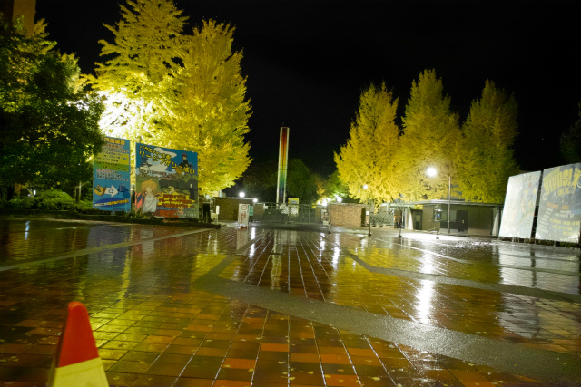
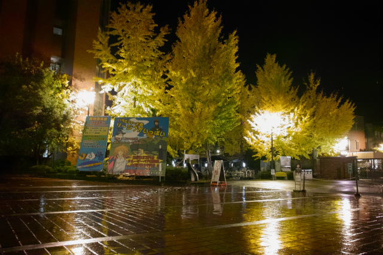
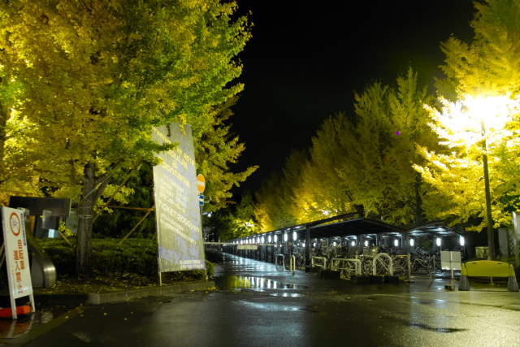
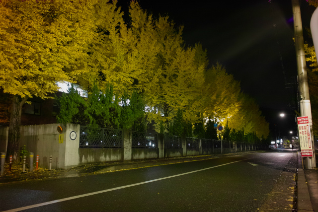
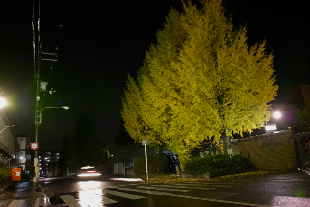
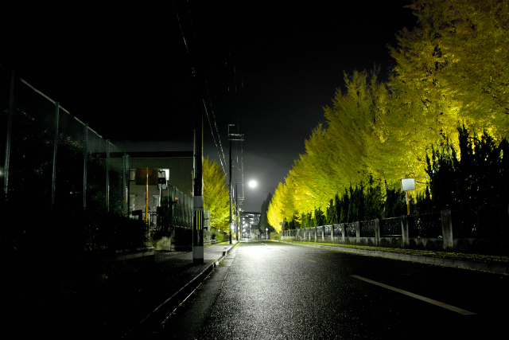
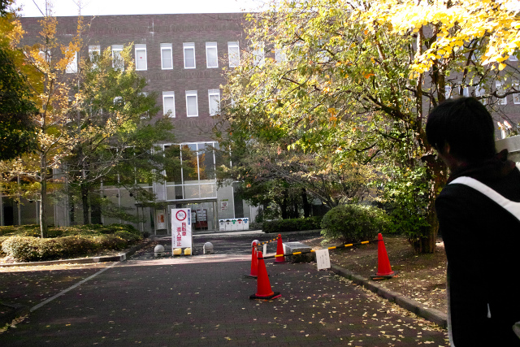
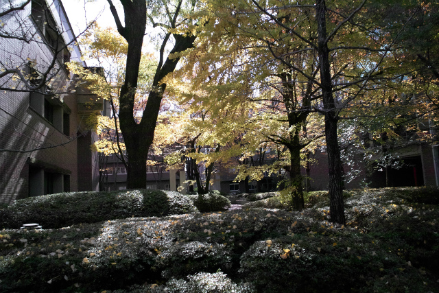
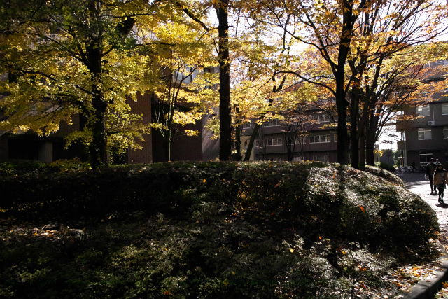
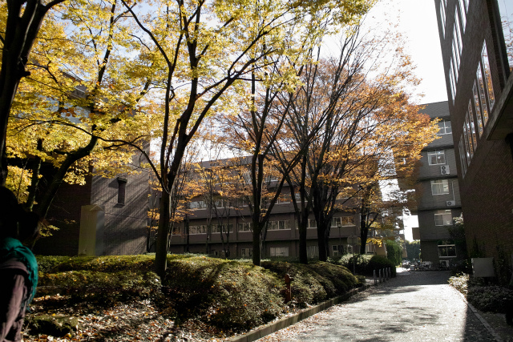

| ・銀杏＠松ヶ崎キャンパス (H24.11.15) | |||
|
松ヶ崎キャンパスも秋真っ盛りという様子です。同時に京都らしい朝晩の冷え込みも本格化して、冬がそこまで来ています。さて、修士論文提出まで88日、 卒業論文提出まであと90日です。もう3ヶ月切ってるんです。。。「この銀杏の葉が散るまでに研究結果を出します」（フラグが立った！） |
|||
|

雨に銀杏が映えます |

タイルのトコロは滑りやすい | ||
|

自転車置き場に屋根が出来たんです |

夜は人が少なくてゆっくり観られます | ||
|

南側も良い感じに |

街灯が月のように見えてます | ||
|

次の日のお昼前 |

美術資料館の裏手 | ||
|

季節毎に表情があるので |

通学・通勤の際に楽しめます | ||